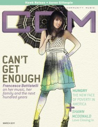

Francesca Battistelli
|  March 2011 CCM Digital |
 May 2012 Charisma |
 December 2012 CCM Digital |
 1 May 2014 CCM Digital |
Media coverage:
- Jan 2010 in CCM Digital "5 Questions With: Francesca Battistelli"
- Feb 2010 in CCM Digital "Two Is Better Than One", by Andrew Greer
- May 2010 in CCM Digital "The Writer's Room: Francesca Battistelli"
- Nov 2010 in CCM Digital "CCM: Life: Baby, Baby..."
- Mar 2011 in CCM Digital "Mommyhood Becomes Her", by Caroline Lusk
- Feb 2012 in CCM Digital "Tour Spotlight: The Story Tour, Life Changers International Church, Hoffman Estates, IL", by Andy Argyrakis
- May 2012 in Charisma "How to Raise a Superstar", by Kate Battistelli
- Dec 2012 in CCM Digital "Francesca Gets Festive!", by Caroline Lusk
- Nov 2013 in CCM Digital "In [His/Her] Own Words: Why We Say Thanks", by Grace C. Cartwright
- 15 Feb 2014 in CCM Digital "Musicians Corner: In the Studio: Francesca Battistelli", by Andrew Greer
- 1 May 2014 in CCM Digital "Honesty Becomes Her", by Caroline Lusk
- Jul 2014 in Christianity Today "33 Under 33: The Pop Singer", by Kate Shellnutt
Albums & reviews:
2008: My Paper Heart
- Aug 2008 in Charisma & Christian Life, by Cameron Conant
- Sep 2008 in Christian Single, by Christina A. Banister
- Sep 2008 in Worship Leader
2011: Hundred More Years
- Mar 2011 in CCM Digital, by Grace S. Aspinwall
- Jul 2011 in Living With Teenagers, by Randy Williams
- 6 Sep 2011 in Christian Century, by Lou Carlozo
2012: Christmas
- Oct 2012 in CCM Digital, by Andy Argyrakis
- Nov 2012 in Worship Leader, by Jeremy Armstrong
- Dec 2012 in Christianity Today, by Robert Ham
2013: Christmas [+DVD]
2014: If We're Honest
- Apr 2014 in Charisma, by Felicia Abraham
- 15 Apr 2014 in CCM Digital, by Grace S. Aspinwall
- 1 Jan 2015 in CCM Digital, by Grace S. Aspinwall
2020: This Christmas
Award Summary (Nominations / Wins)
Dove Awards- 2009 Dove Awards
- Song: "I'm Letting Go"
- Female Vocalist
- Pop/Contemporary Album: My Paper Heart
- New Artist
- Pop/Contemporary Recorded Song: "I'm Letting Go"
- Song: "Free To Be Me"
- Female Vocalist
- Artist
- Short Form Music Video: "Free To Be Me"
- Pop/Contemporary Recorded Song: "Free To Be Me"
- Song: "Beautiful, Beautiful"
- Female Vocalist
- Artist
- Pop/Contemporary Recorded Song: "Beautiful, Beautiful"
- Female Vocalist
- Pop/Contemporary Album: Hundred More Years
- Artist
- Recorded Music Packaging: Christmas
- Christmas Album: Christmas
- Pop/Contemporary Album: If We're Honest
- Song: "He Knows My Name"
- Artist
- Worship Song: "Holy Spirit"
- Song: "The Breakup Song"
- Pop/Contemporary Recorded Song: "The Breakup Song"
- Inspirational Recorded Song: "God Is Good"
- 2009 Grammy Awards
- Best Gospel Performance: "Free To Be Me"
- Best Contemporary Christian Music Album: If We're Honest
- Best Contemporary Christian Music Performance/Song: "Write Your Story"
- Best Contemporary Christian Music Performance/Song: "Holy Spirit"
© 2011 CMnexus. Last updated May 2025. Contact: editor -AT- cmnexus -DØT- org